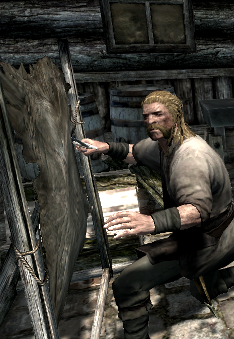
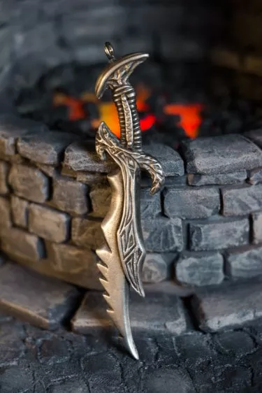

The armour and weapons in the game are extremely diverse, and
different weapons and armour do different damage and defence. There
are different types of each, in armour, there’s light and heavy, in
weapons there’s one-handed and two-handed. Each will take more time to
swing, nullify your ability to run, or just be a hindrance, but if you
like heavy armour, as it is more protecting, then by all means use it.
The weapons are the same. If you like a big crushing impact on your
enemy, then use two-handed weapons. This website isn’t here to tell
you what to do and what not to do, but rather to suggest possible
weapons.

Creating Weapons and Armour
As said before, there are hundreds of different weapons and armour
in Skyrim, different in the fact that they can be enchanted or made of
different materials, or even just found in caves. The way you can make
them is you go to a blacksmith in any of the Holds, and start
smithing. After you make armour, you can improve it at a workbench or
a grindstone. Improving the item will make it either more powerful or
more defensive, and will really help in any battle. The Skill Tree is
an important part to smithing, since without the smithing skills you
can't smith any type of armour or weapon, and while the skill tree
might appear to be a circle, it is really two separate paths, both
ending at Dragon Armor, which allows creation of the best light armor
(Dragonscale) and second-best heavy armor (Dragonplate). The left-hand
branch is shorter, requiring one fewer perk than the right-hand branch
to reach Dragon armor. Since the left-hand branch includes
medium-quality heavy armor (steel plate, via the Advanced Armors
perk), the left-hand branch can also be a good choice for heavy armor
specialists. Also note that he difference in armor rating between
Dragonplate and the best heavy armor, Daedric, is not necessarily
significant. The lighter weight of Dragonplate armor may be of more
importance, unless you have either the Conditioning perk or activate
The Steed Stone, both of which negate the adverse effects of heavy
weight. Both ebony and Daedric weapons are better than glass ones,
which is the best type offered by the left-hand branch. However, when
upgraded to Legendary quality, the damage difference between a glass
weapon and a Daedric one will be less than 10%

Table Of The Perks And What They Do
Perk
What Level You Have To Be
What You Can Create
What you need for the perk
Notes
No Perk
15
Iron weapons, Iron Heavy Armor, and Leather Light Armor
None
None
Arcane Blacksmith
60
You can improve magical weapons and armor.
Steel Smithing
None
Steel Smithing
15
Can create Steel armor and weapons at forges, and improve them
twice as much
None
Also create Bonemold armor
Elven Smithing
30
Can create Elven armor and weapons at forges, and improve them
twice as much
Steel Smithing
Also create Chitin armour
Advanced Armors
50
Can create Scaled and Plate armor at forges, and improve them
twice as much
Elven Smithing
Also create Nordic armor and weapons
Glass Smithing
70
Can create Glass armor and weapons at forges, and improve them
twice as much
Advances Armors
None
Dwarven Smithing
30
Can create Dwarven armor and weapons at forges, and improve them
twice as much
Steel Smithing
None
Orcish Smithing
50
Can create Orcish armor and weapons at forges, and improve them
twice as much.
Dwarven Smithing
None
Ebony Smithing
80
Can create Ebony armor and weapons at forges, and improve them
twice as much
Orcish Smithing
Also create Stalhrim armor and weapons
Daedric Smithing
90
Can create Daedric armor and weapons at forges, and improve them
twice as much.
Ebony Smithing
None
Dragon Armour
100
Can create Dragon armor at forges, and improve them twice as much